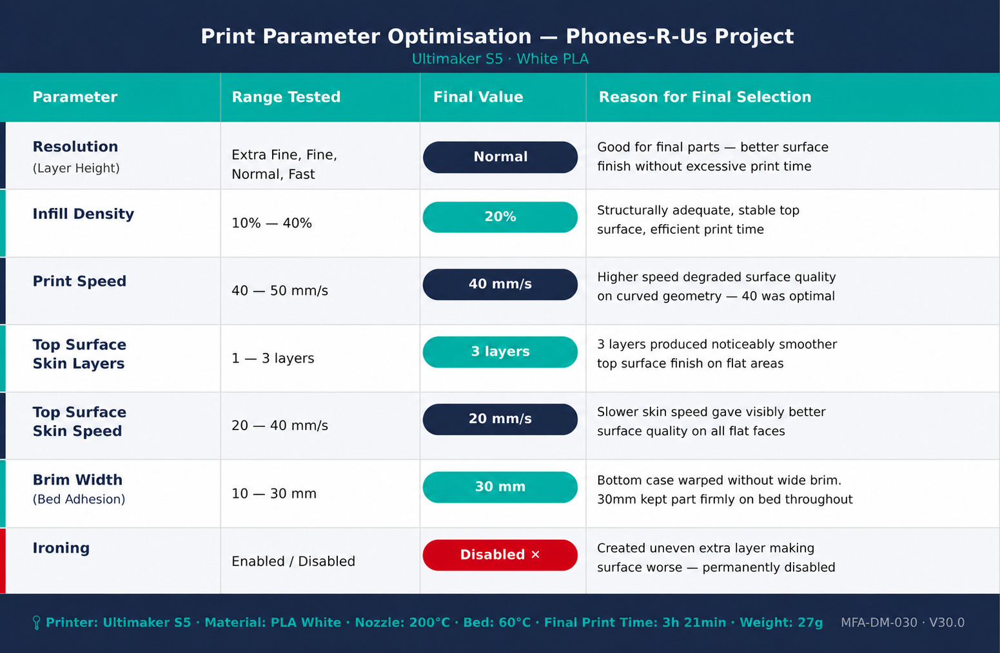

Industry 4.0 Manufacturing Environment
 Industry 4.0 connected manufacturing workflow.
Industry 4.0 connected manufacturing workflow.
 Smart factory digital manufacturing concept.
Smart factory digital manufacturing concept.
 Digital manufacturing traceability record.
Digital manufacturing traceability record.
From Prototype to Production
Explore SystemOver 50 design iterations were developed using multiple FDM printers. The system was validated through automated FESTO CP Lab stations and production simulation modelling.
Industry 4.0 connected manufacturing workflow.
Smart factory digital manufacturing concept.
Digital manufacturing traceability record.

The project began with mandatory printer induction at PrintCity led by Gary Buller. The session introduced machine operation, material handling, QR scan-before-printing workflow, and additive manufacturing practices.
The very next day, the first bottom case was printed in black PLA. Although the geometry was acceptable, the dark material made edges, surface quality and dimensional details difficult to inspect. White PLA was later adopted for all future iterations.

The bottom case was designed quickly using the instructor-provided workflow. However, the top case required interpreting engineering drawings independently and reconstructing the geometry directly inside Fusion 360.
Initial versions intentionally excluded the snap-fit mechanism to validate the primary geometry before introducing tolerance-sensitive features.

More than 50 print iterations were produced across Ultimaker S3, Ultimaker S5 and Bambu Lab P1S printers. Parameters including infill density, layer resolution, print speed and support structures were continuously adjusted.

A QR code traceability system was embedded directly into the top case using dual extrusion printing.
The QR code linked directly to a digital manufacturing record PDF, creating a component-level digital twin system.

Final iterations were tested on the FESTO CP Lab automated assembly line. The measuring station validated dimensional accuracy, while the muscle press station verified snap-fit assembly behaviour.

Multiple physical iterations were lost before submission. Final parts were rebuilt using accumulated engineering knowledge.

Multiple parameter combinations were tested throughout the development cycle to improve dimensional consistency, QR readability, support removal behaviour and snap-fit engagement quality.

Ultimaker Cura print parameter optimisation. Takt time and production balancing analysis.
Takt time and production balancing analysis.


 Simulation analytics and manufacturing evaluation.
Simulation analytics and manufacturing evaluation.